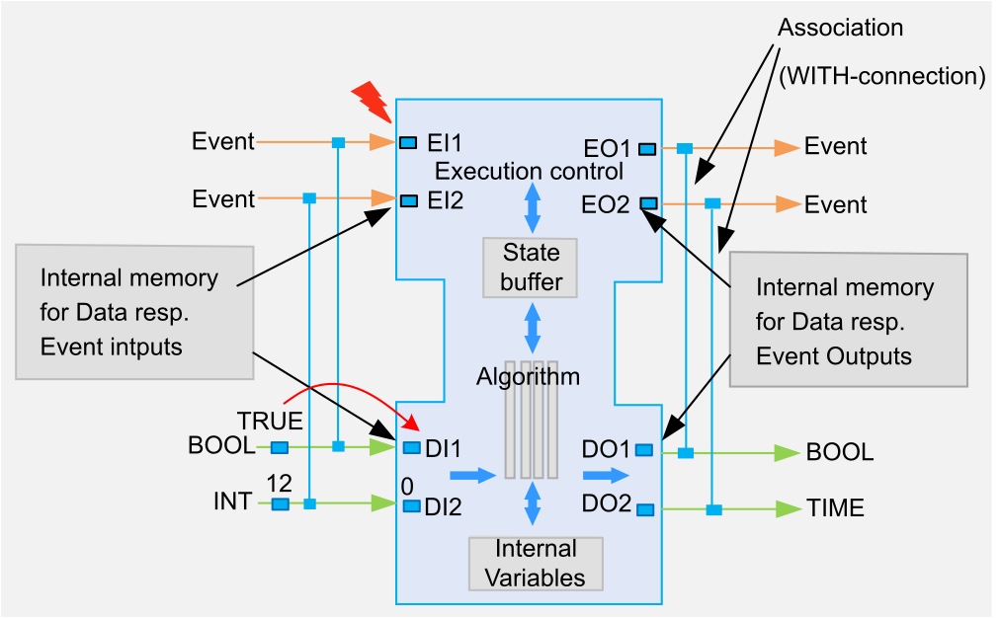
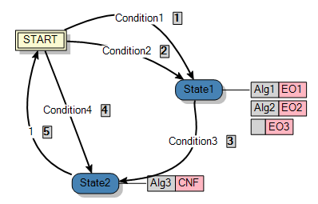
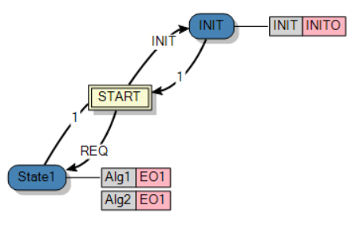

The Basic function block has event and data ports which can be connected together by association (WITH-connection). This association causes that, when triggering an input event, the current values of the associated data inputs are copied quasi inward into the block, and thus are available for further processing. The values of data inputs, which are not associated with the triggered event are not copied into the block. The values of these data inputs remain unchanged inside the block.
In the same way, only data of those outputs associated with an output event which was also fired at this time are updated for processing for subsequent blocks.
In addition, two types of internal variables can be used in Basic blocks:
Internal variables can be applied via Function block Interface Editor. These stand for the entire execution of the block is available and the value of such a variable is retained even when the block is exited.
VAR_TEMP
tmp : REAL := 100.0;
check : BOOL;
END_VAR;The ECC, the Execution Control Chart, is the state machine of the Basic function block, that means that this part defines and represents graphically the execution sequence of each ECC state (in the image above START, State1, State2) of the block. Each ECC state in turn, can lead to the execution of one or more algorithms. After the execution of an algorithm an output event of the Basic function block can be fired. If every action of an ECC status has been processed, the transitions to the other ECC conditions are reconsidered and, if possible, the next ECC state will be entered. After passing every possible ECC state and its actions, when no further transitions can be crossed, the block is deemed to be completely processed and will be terminated.

|
Element |
Description |
|---|---|
|
START |
This is the initial state the Basic function block occupies at the beginning, during the first run of the block. Each time the Basic FB is executed again it depends on where the block was terminated at last. The processing will then start from this ECC state. Only if the block is performed in a way that the processing in any case ends in the ECC state START, the block starts its execution at every call with this ECC state. |
|
State1, State2, ... |
The block can have any number of ECC states. These are processed in the same order in which the transition conditions (Condition1, Condition2, ...) turn out to be true. |
|
Alg1, Alg2, Alg3, ... |
The gray boxes associated with the ECC states are those actions which are executed when reaching the ECC state. Each state can be assigned any number of actions. Each action can be assigned an algorithm, which is then processed. Once the algorithm has been finished, an output event can be fired, which has to be defined for this purpose in the light red shaded boxes of the action. Exception: the output event can be reset (False) in the algorithm, so the event will not be fired, even though it is defined in the action in the light red box. So you can suppress the firing of the event by the algorithm. The sequence of actions will be carried out in the same form as they are arranged one below the other at the state. If the gray box for the algorithm is left empty (as in the picture above in State1) an output event, which is defined in the light red box next, still can be fired. Only the execution of an algorithm is omitted. |
|
EO1, EO2, EO3, ... |
The light red shaded boxes that are included in every action can be assigned to an output event. If an output event is specified, then this event is fired directly after the execution of the algorithm of this action is complete. Exception: see table row above |
|
Condition1, Condition2, ... |
For each transition, define a condition that can only have two states as a Boolean expression: true, false. A condition consists of [Input Event] and [Expression Guard]. Each input event of the Basic FB is valid to be used as Input Event of the condition. Any Boolean expression consisting of internal variables of the block, as well as from input or output variables from the interface of the block can be used as the Expression Guard of the condition. In the standard IEC61499-ed1 and -ed2 two different syntaxes are defined. In -ed1 'EVENT AND Guard expression' has been set as an expression in -ed2 'EVENT [Guard expression]'. Both versions are valid expressions. Example 1: INIT AND a>2 Example 2: INIT [a>2] It is also possible to have a condition that consists of only one single input event or just a Boolean expression without a preceding input event. In the second case, the condition is checked as soon as any event is triggered, provided, of course, that the condition describes a transition from the currently active state to a potential next state. An example of this is '1' (as already defined as a return condition in every newly generated basic block), whereby the transition back to START is executed as soon as the corresponding state has been reached. |
|
,
, ... |
The order of the transition conditions is initially identical to the order in which the transitions were generated. You can rearrange the order at any time by editing the Transition Conditions Order. The order of the transition conditions determines the execution sequence of transitions. The transition conditions are checked in this order, while the transition of the first valid condition is executed. Each transition can be used only once per block call. Once the transition has been carried out, it is marked as already used and thus cannot be performed a second time. The markers are not reset until the block has been completely processed and is going to be terminated. |
A block has input buffers and output buffers for data and events in order to save their last state.
After triggering an input event the Input Event buffer is set first.
Those input buffers of the data inputs are written, which have an association (a WITH-connection) with the triggered input event available. These values are available now and the block starts its processing of the ECC states:
ECC states of a function block:
From current ECC state (on the first call of the block it is the state START, otherwise it is the ECC state that was active when the block was last exited - which is stored in the state buffer of the block) the outgoing, unmarked crossings are checked in the order as they are established in Transition Conditions Order.
The first transition with a true condition is executed and the corresponding ECC status of the block is occupied.
The recently used transition is marked so that it cannot be used a second time.
The state buffer of the block is written.
Actions of an ECC state:
The event buffers of the event outputs of the actions belonging to this ECC state are set.
The algorithm assigned to the first action of the ECC state is executed.
The output event buffer only of this action is checked. When set to TRUE, just this one event will be fired.
The output event buffer of the fired event is reset. (This means that from this point on, the event buffer shows FALSE within the debugger, while the event was already fired.)
Any other buffers, including the output event buffers of the other actions of this ECC state, remain unchanged.
When present, the next action of this state is processed in the same way.
Special case: algorithms triggering same output event within the same state
For a state with several actions, the same output event is only fired once:

In this example, when the State1 state is active and the Alg1 algorithm is executed, the EO1 output event is only executed once. When Alg2 is executed, it does not trigger EO1 again.
After all the actions of the state have been processed, the output event buffers are reset and the process continues with checking the transitions of the current state, as described above in ECC states of a function block.
End of processing:
Once there are no transitions to other ECC states left to be crossed, because they are already marked and thus executed, or none of the remaining, unmarked transition conditions proves to be true, it will be continued as follows:
The markings of the transitions are reset.
(The current state was already saved in the state buffer after the ECC state change.)
End of the execution of the Basic function block.
The behavior can also be watched step by step via Test Container.